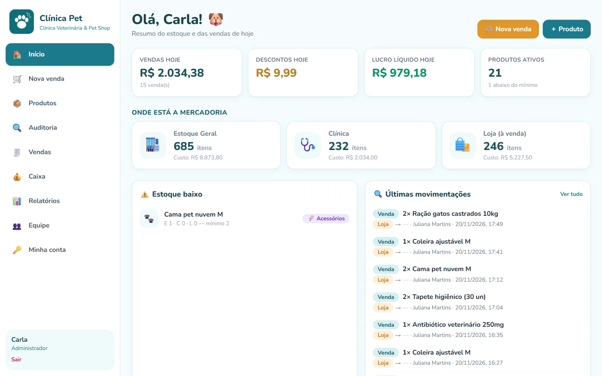
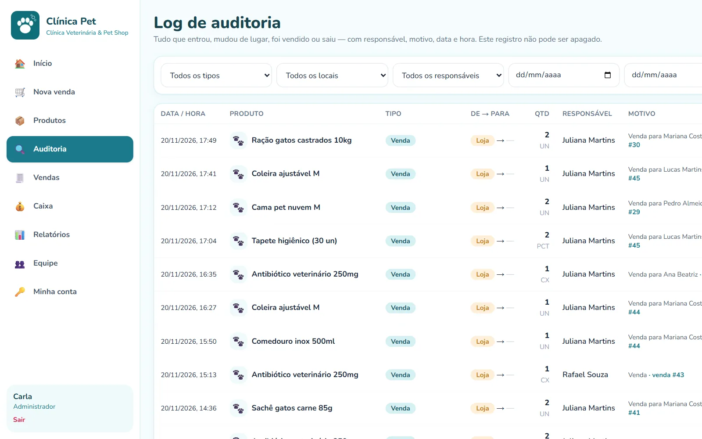
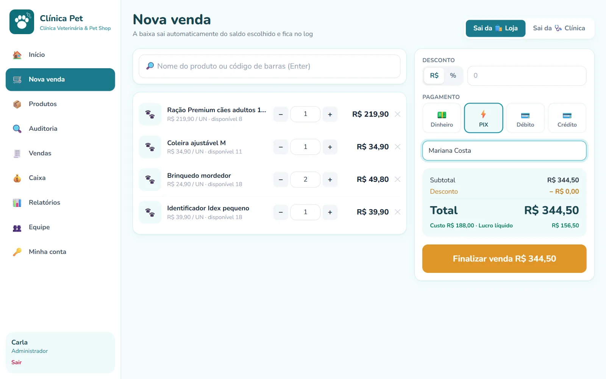
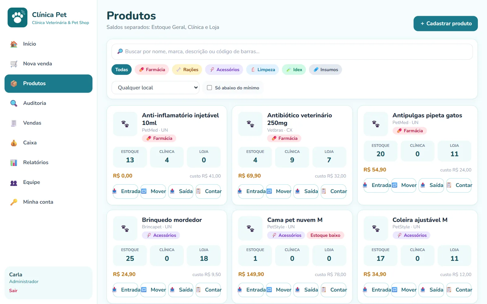
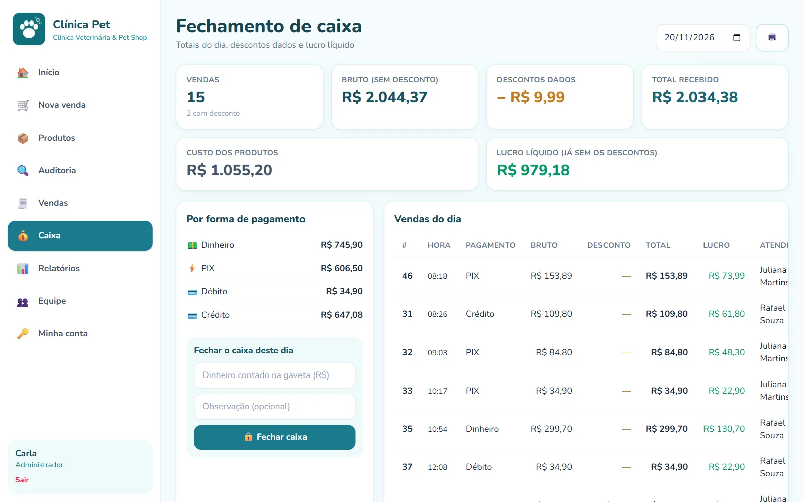
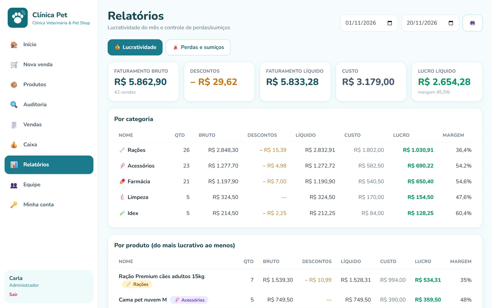
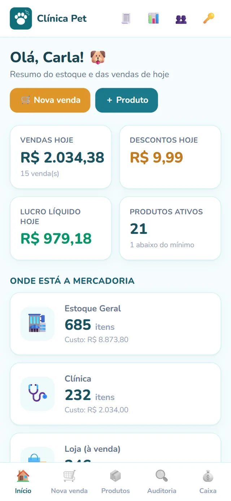
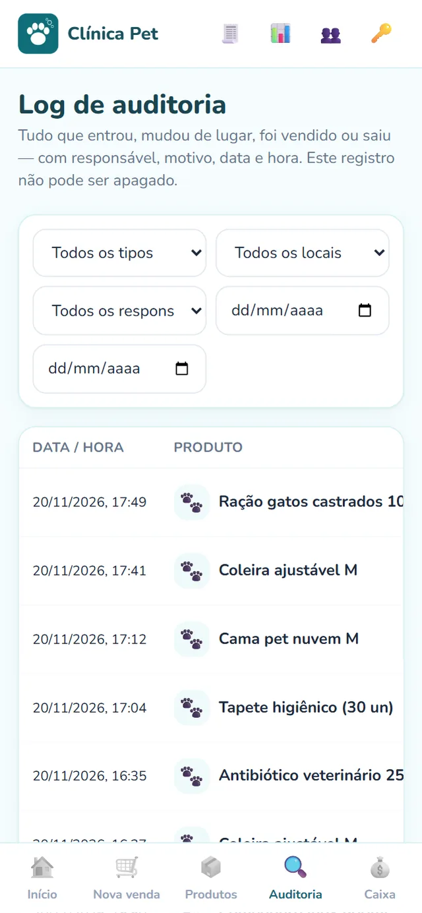

← Todos os projetos
Estudo de caso
Estoque, vendas e caixa
Controle de estoque, vendas e caixa para uma clínica veterinária com pet shop, feito para descobrir para onde a mercadoria estava indo.
- Tipo
- Sistema web (API + painel)
- Meu papel
- Análise, desenvolvimento e testes
- Plataforma
- Web (PWA), celular e computador
- Banco
- PostgreSQL (Supabase)

O problema
Produto sumia e ninguém sabia se tinha sido vendido, usado num atendimento ou perdido. O estoque era um número só, editado à mão.
A solução
- Três saldos por produto (estoque geral, clínica e loja) que só mudam por movimentações: entrada, transferência, venda, uso na clínica, perda e contagem.
- Contagem de inventário: a pessoa digita o que contou e a diferença vira um registro de sumiço, com responsável.
- PDV com leitor de código de barras e limite de desconto para funcionário.

Destaque: log que ninguém apaga
Um trigger no PostgreSQL bloqueia qualquer UPDATE, DELETE ou TRUNCATE na tabela de movimentações. Nem o próprio sistema consegue apagar o histórico, e é isso que torna o relatório de perdas confiável.




Decisões técnicas
- API REST em NestJS com TypeORM, JWT e papéis (administrador e funcionário).
- Regras no servidor: o banco impede saldo negativo, o desconto é rateado entre os itens e só o administrador cancela venda.
- Frontend em Next.js com Tailwind, instalável como aplicativo (PWA).
No celular


Tecnologias
NestJS, TypeORM, PostgreSQL (Supabase), Next.js 15, React, Tailwind CSS e PWA.